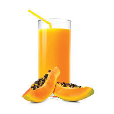

Activity 5.4
Preparation of tamarind juice
Prepare tamarind juice by following the appropriate method.
(i) Assess the quality of the juice prepared.
(ii) What challenges did you face in preparing the juice?
(iii) How did you address them?
(iv) Write a report on the performed task.
Papaya juice
Ingredients (serve 2 people)
- 1 ripe medium papaya
- 3 tablespoons sugar
- 500 ml water
- Ice cubes
- Fresh mint leaves (optional)
Method
- 1. Prepare syrup and leave it to cool
- 2. Wash and peel the papaya. Cut it into small pieces and then mash them using a wooden spoon.
- 3. Add syrup then stir well, or blend the papaya with syrup and water.
- 4. Serve the juice accordingly, as shown in Figure 5.5.

Figure 5.5: Papaya juice100